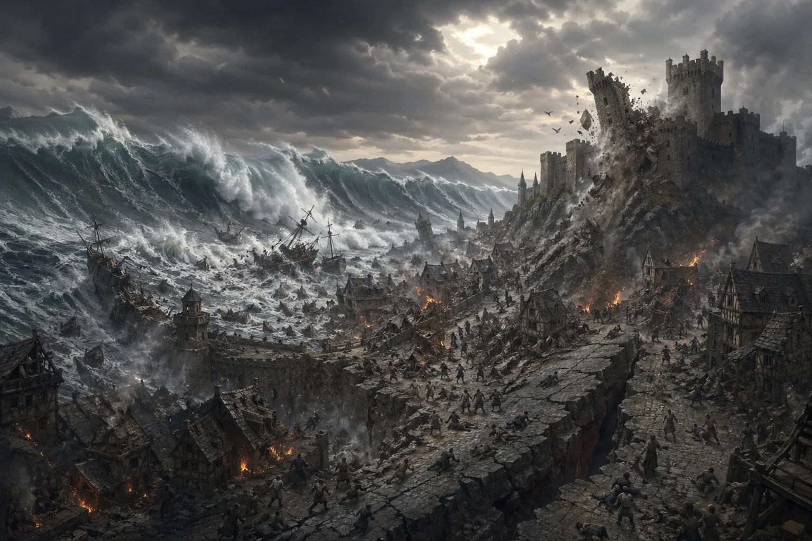
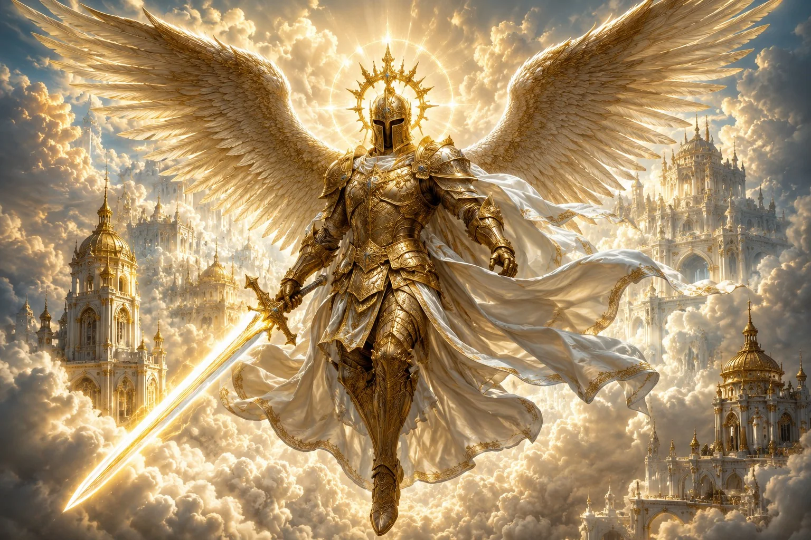
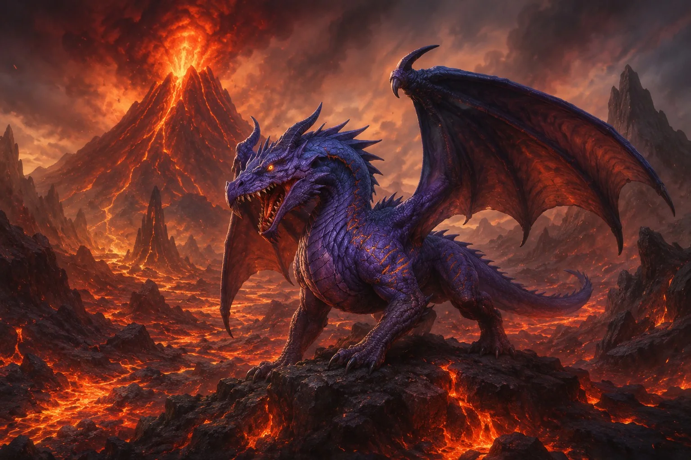
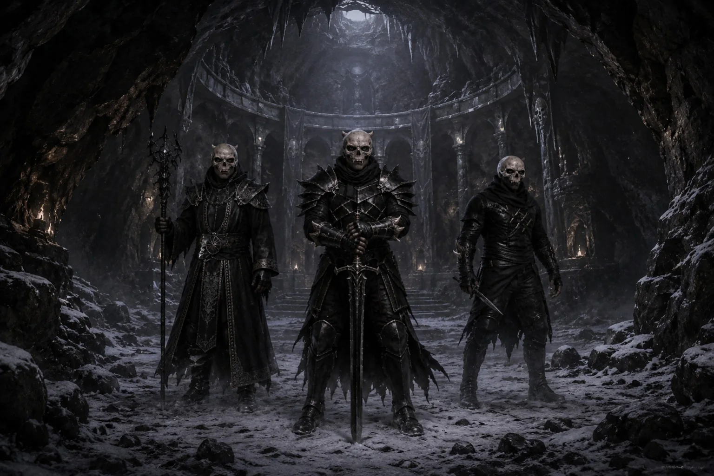

Grande catégorie du lore
Origines
et Histoire
Comprendre ce qui fut, ce qui survécut et ce qui veille encore.Ouvrir les archives ↓Un seul monde, plusieurs vérités.
Les faits transmis par les survivants côtoient les croyances, les légendes et les récits des factions. Chaque rubrique apporte une pièce différente à l’histoire du Nouvel Âge.
Histoire du monde
Suivez les sept fragments connus : l’ancien continent, sa chute, l’arrivée des survivants et les mystères d’une terre déjà habitée autrefois.
Explorer la rubrique →
Religions
Découvrez les divinités, les héros, les rites, les fêtes et les visions de l’au-delà qui structurent la vie spirituelle des royaumes.
Explorer la rubrique →
Demi-dieux
Rencontrez huit forces primordiales ou maudites dont les domaines, les prophéties et les pouvoirs défient les royaumes.
Explorer la rubrique →
Factions
Identifiez les alliés, les peuples libres, les armées et les menaces incarnés par les PNJ et les animateurs au fil des événements.
Explorer la rubrique →Les royaumes écrivent la suite de cette histoire.
Découvrez les civilisations jouables, leurs institutions, leurs conflits et les survivants qui rebâtissent leur avenir sur Ragnarok.
Découvrir les royaumes